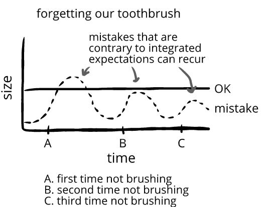

Some mistakes recur
Some things only produce mistakes once—like the punchline of a joke.
The first time we hear the punchline, it deviates from our expectations. The second time we hear the punchline, it's already become our expectations—so there's no mistake:
Minh and Trevor check their co-op score. 469.
Trevor: “69. Nice.”
Minh: “Heheh.” (←medium mistake↔humor)
Trevor: *repeating* “69. Nice.”
Minh: “Heh.” (←small mistake↔less humor)
Trevor: *repeating* “69. Nice.”
Minh: (confused) “Brah.” (←even smaller mistake↔no humor)
Minh sees a bad joke all over the internet, and laughs. (←large mistake↔humor)
He sees the same bad joke all over the internet again the next day, and doesn’t laugh. (←medium mistake↔no humor)
He sees it all over the internet again the day after next, and doesn’t laugh. (←small mistake↔no humor)
But things are different when things deviate from integrated expectations—since then mistakes can be felt repeatedly at a high size:
Yasmin puts on her glasses for the first time. She can see leaves! She beams. (←large mistake↔humor)
The next day she puts on her glasses. She can see the stripes in bricks! She beams. (←large mistake↔humor)
The next day she puts on her glasses. She can see details in the clouds! She beams. (←large mistake↔humor)
Minh forgets his toothbrush. He smiles in irritation. (←large mistake↔humor)
Next week, Minh forgets his toothbrush again. He smiles in irritation. (←large mistake↔humor)
The third week, Minh forgets his toothbrush again. He shakes his head and grimaces. (←large mistake↔humor)

So some things generate humor three days in a row (putting on glasses), but other things don't (hearing a joke)—which is partially determined by how integrated our expectations are.
Consider:
Mistakes can also recur in a way that doesn't repeatedly generate humor, but repeatedly generates mistake-predominant emotions instead:
Jennifer and Sam had to downsize houses last year. Sometimes she has to drive past her old house, and each time she feels a sharp loss. (←Jennifer feels long duration of grief)
Inferences. We can use humor to draw information about people. With someone's intensity of humor, we learn about the size of their evaluations—with someone's duration of humor, we learn about the integration of their expectations.